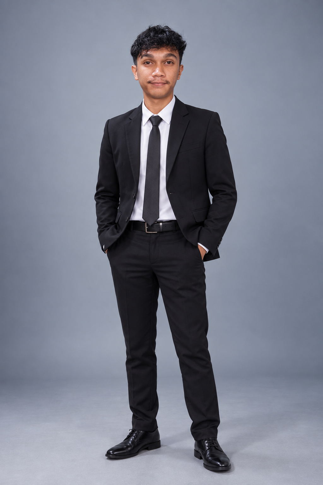
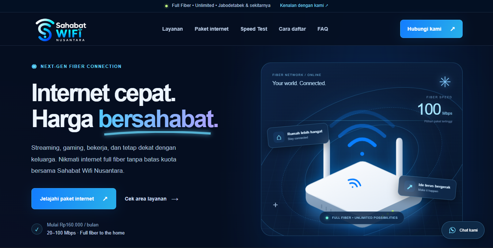
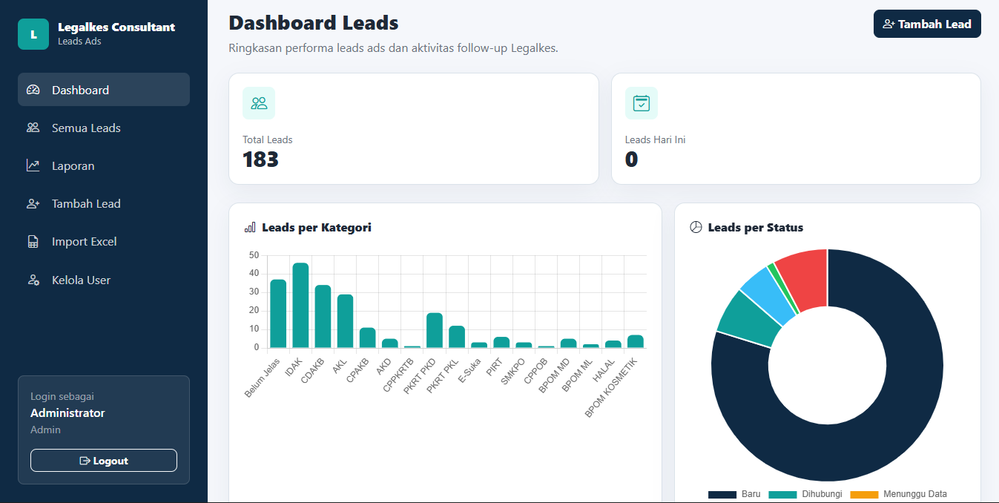
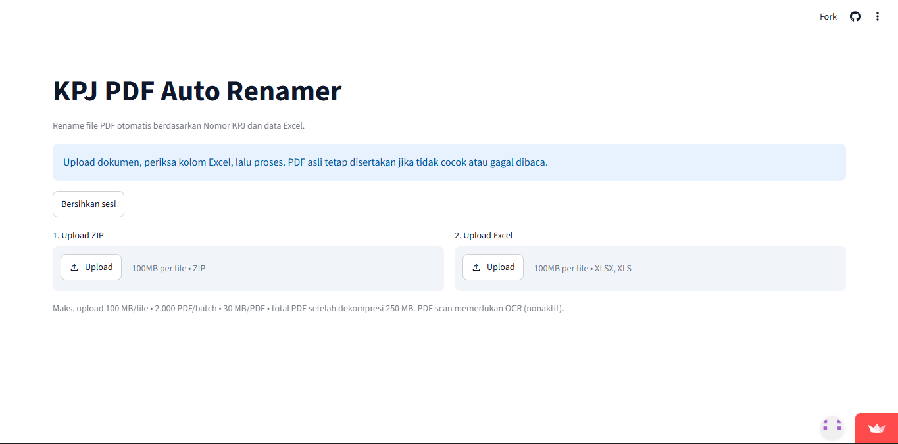

01⌘
Pengembangan web
PHP, HTML, CSS, dan JavaScript untuk aplikasi CRM, monitoring, kasir, dan website profil bisnis.
PHP · HTML · CSS · JavaScriptPORTOFOLIO / WEB DEVELOPMENT & DATA
Halo, saya
Membangun aplikasi untuk kebutuhan bisnis,
dan mengeksplorasi data melalui machine learning.

Logika dalam berpikir.
Ketelitian dalam setiap langkah.
Saya Muhammad Rizqi Maulana, lulusan S1 Teknik Informatika Universitas Pelita Bangsa.
Portofolio saya mencakup CRM Leads Legalkes, Legalkes Progress, aplikasi kasir dan website Warkop Djoeragan, KPJ PDF Auto Renamer, serta penelitian analisis sentimen telemedicine.
Dalam proyek-proyek ini, saya mengerjakan kebutuhan aplikasi, antarmuka, pengelolaan data, dan penyempurnaan fitur untuk mendukung kebutuhan bisnis.
Dari aplikasi bisnis hingga pengolahan teks.
Teknologi yang hadir dalam karya saya.
PHP, HTML, CSS, dan JavaScript untuk aplikasi CRM, monitoring, kasir, dan website profil bisnis.
PHP · HTML · CSS · JavaScriptMySQL/MariaDB, pengelolaan data, akses berbasis role, impor Excel, ekspor CSV, dan dashboard.
MySQL · Bootstrap · Chart.jsPengolahan teks dengan Python, ekstraksi fitur TF-IDF, klasifikasi Naive Bayes, dan evaluasi model.
Python · scikit-learn · Google ColabTujuh proyek aplikasi dan web, serta satu penelitian.
Pilih karya untuk melihat ceritanya.

Pencatatan keuangan pribadi dan bersama, ringkasan transaksi, serta tujuan tabungan.

Website layanan internet dengan pilihan paket, konsultasi WhatsApp, FAQ, dan speed test.

Pengelolaan leads, riwayat follow-up, dan laporan dalam satu aplikasi.

Monitoring pekerjaan perizinan, milestone, dokumen, dan aktivitas tim.
 MASUK
MASUK DASHBOARD
DASHBOARD TRANSAKSI
TRANSAKSIAplikasi kasir untuk transaksi, stok produk, cetak struk, dan laporan.

Website profil warkop dengan informasi menu, lokasi, dan kontak.

Penamaan ulang PDF berdasarkan nomor KPJ dan data Excel melalui aplikasi Streamlit.
Analisis ulasan aplikasi telemedicine di Indonesia dengan TF-IDF dan Multinomial Naive Bayes.


Klasifikasi ulasan aplikasi telemedicine dengan TF-IDF dan Naive Bayes.
↳ Screenshot asli proyek dan visualisasi penelitian. Buka halaman detail untuk melihat galeri dan memperbesar gambar.
Setiap pencapaian punya cerita.
Setiap pengalaman memberi perspektif.
MAGANG · 2024 — SAAT INI
Legalkes Consultant
Di bawah naungan PT Siwa Duta Gemilang
Pengelolaan Website & Dukungan Digital Marketing
PENDIDIKAN TINGGI · 2022 — 2026
Universitas Pelita Bangsa
Universitas Pelita Bangsa. Skripsi tahun 2026: analisis sentimen ulasan aplikasi telemedicine menggunakan TF-IDF dan Multinomial Naive Bayes.
Lulus 2026 · IPK 3,65 / 4,00PENGALAMAN KERJA
PT Paramount Bed Indonesia
04 November 2019 — 03 Mei 2021
Kawasan Industri MM2100 · Cikarang Barat, Bekasi
Menangani persiapan dan proses pengecatan komponen rangka tempat tidur medis melalui Electro Deposition Painting (EDP) dan powder coating sesuai standar kualitas perusahaan.
PENDIDIKAN KEJURUAN · 2016 — 2019
Jurusan Multimedia
PRAKTIK KERJA LAPANGAN · 2018
PT Supernova Flexible Packaging
Pabrik Jababeka 2 · Cylinder Making
Membantu karyawan pada pekerjaan desain kemasan di bagian Cylinder Making, termasuk membuat mockup kemasan selama satu bulan PKL.
Durasi · 1 bulanPENGEMBANGAN PROYEK
Mengembangkan CRM Leads Legalkes, Legalkes Progress, Kasir Warkop Djoeragan, dan Website Warkop Djoeragan dengan bantuan Codex. Rincian masing-masing karya tersedia pada bagian proyek.
CURRICULUM VITAE
CV PDF berbahasa Indonesia tersedia untuk diunduh.
Profil, pengalaman, pendidikan, dan proyek dalam dua halaman.
Terbuka untuk kesempatan kerja dan diskusi profesional.
Hubungi saya melalui email atau profil berikut.